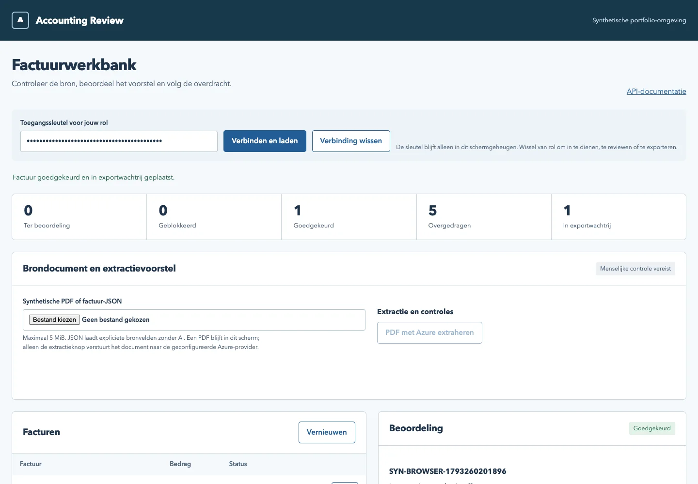
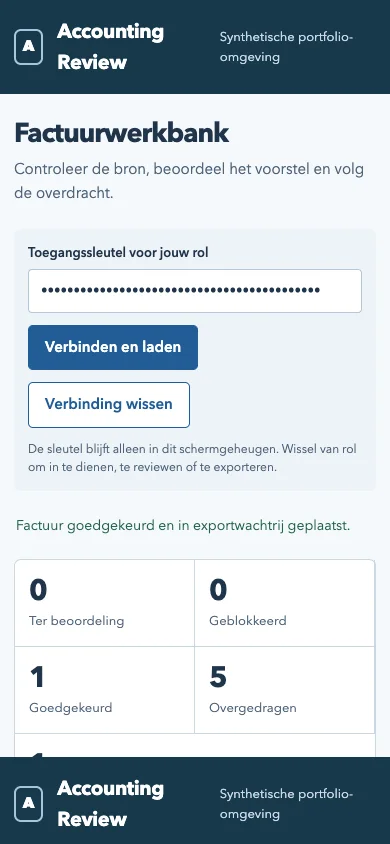

Every cent checked. Every booking approved by someone else.
Invoices arrive with typos, unknown suppliers and totals that are one cent off. This workbench validates them with exact decimal arithmetic, blocks suspicious ones for review, lets only a different person approve, and exports each approved invoice once through a transactional outbox. Azure extraction and categorisation are optional proposals, never decisions.

Why it exists
Small errors in invoices become real money.
Amounts are typed or extracted as floats, a total that is one cent off slips through, an invoice from an unknown supplier gets paid, the same invoice is booked twice after a retry, and the person who entered it also approves it.
Amounts are exact decimals and must balance to the cent. Unknown suppliers, future dates and totals above €10,000 block an invoice for review. The submitter cannot approve their own invoice, decisions carry a version check, and the outbox exports idempotently.
Try it · runs in your browser
Check an invoice
The same rules as the Invoice model and the review flags in store.py, run in your browser with whole-cent arithmetic. Try the presets: one cent off, three decimals, an unknown supplier, and the classic floating-point trap.
The real API adds idempotency keys, unique supplier and invoice-number pairs, tenant filters, the four-eyes rule and the export. All suppliers and invoices are synthetic.
How it works
From intake to an export that happens once
Exact money
EUR only, Decimal with two places and at most 12 digits; net + VAT must equal the total exactly, and VAT above net is investigated.
Flags, not silent failures
Unknown supplier, future invoice date and totals above €10,000 store the invoice as blocked until a reviewer decides with a reason.
Four-eyes and versions
Roles come from server configuration; the submitter cannot review their own invoice, and a stale version is rejected.
One export
Approval and outbox are written in one SQLite transaction; the mock ERP processes idempotently and failures stay retryable.
The flow, step by step
Screens
What it looks like

Evidence
What is real, and what is not
REAL Built and verified
- FastAPI service, validation, flags, four-eyes review, outbox and audit, with tests and CI
- Optional Azure Document Intelligence and Azure OpenAI adapters, checked with mocked HTTP contract tests
- A demo that proves a second export does not create a second booking
SIMULATED Mocked or not built yet
- Synthetic suppliers and invoices; the ERP is a local mock
- No real Azure resource, OCR quality or Microsoft tenant validated
- The audit trail is not tamper-proof: a database administrator can change it
Run it yourself
Run it locally
git clone https://github.com/phlppgdfry/enterprise-ai-accounting-copilot
cd enterprise-ai-accounting-copilot
python3 -m venv .venv
.venv/bin/python -m pip install -r requirements.lock
.venv/bin/python -m pip install --no-deps -e .
.venv/bin/python -m accounting_copilot.demo
.venv/bin/python -m pytest -q
.venv/bin/python -m accounting_copilot.bootstrap
.venv/bin/uvicorn accounting_copilot.api:app --env-file .env --host 127.0.0.1 --port 8000